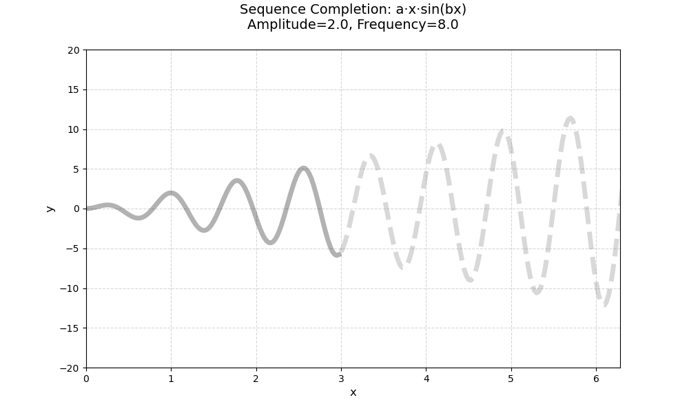
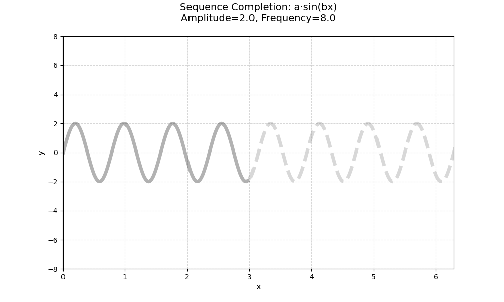
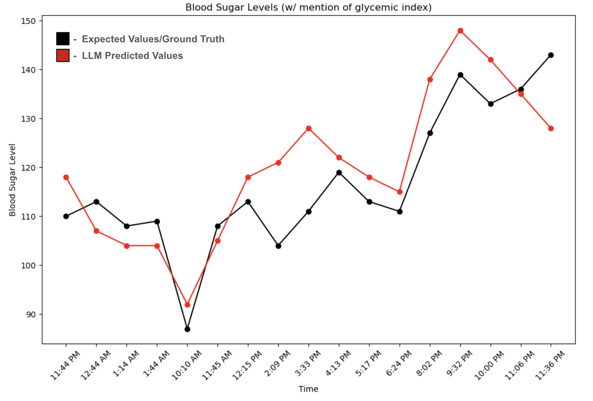
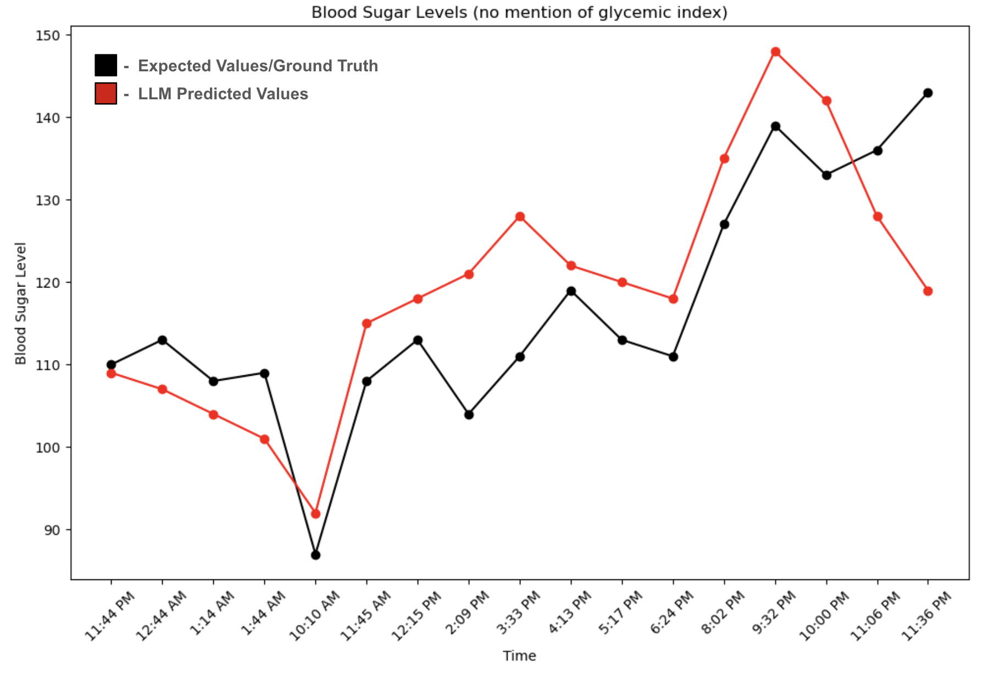
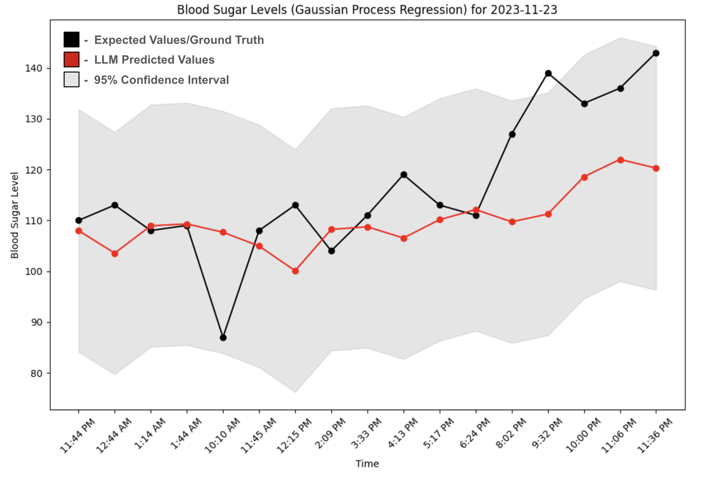

Introduction
In-Context Learning (ICL) enables large language models (LLMs) to adapt their behavior and perform new tasks without updating their internal parameters, such as weights and biases. Instead of retraining or reprogramming the model with large datasets, ICL allows it to learn “on the fly” by using examples, instructions, or demonstrations provided in the input. This approach leverages the model’s pretrained knowledge to complete new tasks simply by showing examples of how those tasks should be performed. LLMs can recognize and complete abstract patterns by observing input-output examples and can even extrapolate functions from these sequences, demonstrating their ability to generalize through pattern learning rather than parameter updates (Mirchandani et al.).
Overview
This introduction will present a series of interactive demos that showcase how In-Context Learning (ICL) can be applied to sequence prediction, sequence transformation, _____, and _______. Each demo illustrates how large language models (specifically Google Gemini’s models) can infer rules, patterns, or relationships directly from zero-shot, few-shot, or many shot examples—without explicit retraining or fine-tuning.
In the sequence prediction demos, the model learns to anticipate the next element in a pattern based on preceding examples, such as predicting numerical progressions in sine functions with transformations, or predicting time-based trends such as blood sugar levels throughout the data.
The sequence transformation demo highlight the model’s ability to map one sequence to another—for instance, converting input patterns into structured output patterns, translating formats, or filling in blanks of input patterns to match trends found in other patterns.
# add more tasks + descriptions
Together, these demonstrations emphasize the adaptability and reasoning capabilities of modern language models. By observing only a handful of examples, they can internalize task logic and apply it to new, unseen data—mimicking human learning from context.
Demos
Sequence Prediction
This demo is inspired by the concepts presented in Large Language Models as General Pattern Machines [2], which explores the capacity of Large Language Models (LLMs) to recognize and generalize visual and abstract patterns.
In this demo, we utilized a collection of numerical sequences derived from transformations of the sine function as the “training” examples for the Large Language Model (LLM). For the function a⋅x⋅sin(bx) and a⋅sin(bx), the model was provided with 10 example sequences generated from uniformly sampled x-values within the range [0, 2π], capturing one complete periodic cycle of the sine wave.
For both functions, the sequences were then input into the Gemini 2.5-Flash model, with reasoning mode turned off to focus on direct pattern continuation rather than higher-level inference. In addition to the training examples, a user-defined test sequence extending beyond the 2π interval was provided to assess the model’s ability to extrapolate and maintain the periodic characteristics of the sine function. Finally, the model was prompted to generate 50, 100, or 200 additional values for each test sequence, demonstrating its capacity to recognize, generalize, and extend the learned sinusoidal patterns.
Prompt Example
You are given several example sequences of (x, y) pairs generated by different mathematical patterns.
Example 1: [(0.0, 0.0), (0.025, 0.199), (0.05, 0.389), ...]
Example 2: [(0.0, 0.0), (0.025, 0.397), (0.05, 0.779), ...]
Example 3: [(0.0, 0.0), (0.025, 0.596), (0.05, 1.168), ...]
Example 4: [(0.0, 0.0), (0.025, 0.795), (0.05, 1.558), ...]
Example 5: [(0.0, 0.0), (0.025, 0.993), (0.05, 1.947), ...]
Example 6: [(0.0, 0.0), (0.025, 1.192), (0.05, 2.337), ...]
...
The following sequence represents a partial test input: {test}
Now generate the next 200 new (x, y) pairs that follow the same underlying mathematical pattern, continuing naturally from where the test sequence ends.
Output a Python list of [x, y] pairs in this format, remember to close all brackets correctly:
[(x1, y1), (x2, y2), (x3, y3), (x4, y4), (x5, y5), ...]
No explanations, no code, no comments — only the list.
Example of Demo
For the function a⋅x⋅sin(bx), the model is given initial examples (gray curve) — representing the known part of the sequence — and is then asked to make predictions of the pattern (red curve) beyond the known range of the sequence. The dashed gray curve serves as the ground truth of the sequence.

For the function a⋅sin(bx), the model is given initial examples (gray curve) — representing the known part of the sequence — and is then asked to make predictions of the pattern (red curve) beyond the known range of the sequence. The dashed gray curve serves as the ground truth of the sequence.
By adjusting the amplitude and frequency parameters in the demo, the user can explore how LLMs understand the underlying mathematical relationship and predict future values based on the provided examples.
Glucose Level Prediction
In this demo, we utilized a collection of full daily time-series sequences, consisting of paired glucose measurements and corresponding meal logs, as the "training" examples for the Large Language Model (LLM). The data captured the complex time-series dependencies between meals and subsequent glucose response.
For the tasks of predicting future glucose levels with and without explicit mention of the Glycemic Index. The model was given the same sequence data for both tasks, but the prompt was augmented with an explicit instruction to use the Glycemic Index or without the Glycemic Index information—to inform its predictions.
For both prediction tasks, the daily sequences and step-by-step context were then input into the Gemini 2.0 Flash model, with reasoning mode turned off to focus on direct pattern continuation rather than higher-level inference. In addition to the training examples, a test sequence representing a future target day of prediction points was provided to assess the model’s ability to extrapolate the learned time-series patterns with the incoporation of meal details. Finally, the model was prompted to generate one additional value at a time in a sequential prediction loop until the entire target day was predicted, demonstrating its capacity to recognize, generalize, and extend the learned time-series patterns, with results being compared to a Baseline Model (Gaussian Process Regression) and evaluated using the Root Mean Squared Error and Mean Squared Error.
Prompt Example
You are the world's best glucose level predictor for adults.
Here is an example of my glucose level data for 20-11-2023:
Date Time Blood Sugar Level
20-11-2023 10:00 AM 89
20-11-2023 10:50 AM 100
20-11-2023 12:38 AM 91
20-11-2023 1:40 PM 93
20-11-2023 3:03 PM 111
20-11-2023 3:37 PM 122
20-11-2023 4:12 PM 116
20-11-2023 6:15 PM 101
20-11-2023 7:27 PM 126
20-11-2023 9:27 PM 118
20-11-2023 9:49 PM 120
20-11-2023 10:26 PM 123
20-11-2023 10:47 PM 121
20-11-2023 11:47 PM 115
and examples of the food I consumed at the time:
Date Time Meal Type Food Items
20-11-2023 10:08 AM Breakfast Poha (150 gm), Tea (100 ml)
20-11-2023 1:53 PM Lunch Roti (4 pc), Baingan ...
20-11-2023 6:27 PM Snacks Samosa Chaat, Coca Cola ...
20-11-2023 8:47 PM Dinner Ghee Roti (3 pc) ...
My last glucose level was 118 at 6:24 PM
I just ate Popcorn, Potato Chips, Pepsi at 6:32 PM for Snacks on 23-11-2023, using the glycemic index, predict my glucose level at 8:02 PM
or
My last glucose level was 135 at 8:02 PM
I ate Popcorn, Potato Chips, Pepsi previously at 6:32 PM for Snacks on 16-11-2023, using the meal, predict my glucose level at 9:32 PM
*Note: I am not diabetic.
Output only a Python list with a single dictionary in this format:
[{{'Date': '{target_date}', 'Time': '{t}', 'Blood Sugar Level': value}}]
No extra text, no explanations, no code, only the list.
Example of Demo
By incorporating the Glycemic Index, Gemini-2.0-Flash uses the provided examples, test sequence, and food data to iteratively predict the patient’s glucose level at each subsequent time point, continuing this process until the end of the day.

By excluding the Glycemic Index, Gemini-2.0-Flash relies solely on the provided examples, test sequence, and food data to iteratively predict the patient’s glucose level at each subsequent time point, continuing this process until the end of the day.

For the Baseline Gaussian Process Regression (GPR) model, predictions are generated solely from the training data, which consist of the patient’s glucose level measurements. The model forecasts glucose levels throughout the day at predefined time markers.
By selecting the number of days to include as examples in the demo, users can explore how LLMs leverage food-related data, in combination with semantic cues, to predict future values in time-dependent datasets based on the provided examples.
Seqeunce Transformation
This demo is inspired by the concepts presented in Large Language Models as General Pattern Machines [2], which explores the capacity of Large Language Models (LLMs) to recognize and generalize visual and abstract patterns.
In this demo, we utilized the Abstract and Reasoning Corpus (ARC) as the source of pattern-based examples for the Large Language Model (LLM). For the ARC tasks, the model was provided with three input–output examples, visually capturing the transformation rules required to solve the task.
The input-output examples were then input into the Gemini 2.5-Flash model, with reasoning mode turned off to focus on direct pattern recognition and application rather than higher-level inference. In addition to the three to four training examples, a test input pattern was provided to assess the model’s ability to extrapolate and apply the observed visual transformation rules to a novel case. Finally, the model was prompted to generate the single corresponding output grid for the test input, demonstrating the capacity of LLMs to recognize, generalize, and execute the learned visual transformation pattern.
The Abstraction and Reasoning Corpus (ARC) is a distinctive benchmark introduced in 2019 by Google AI researcher François Chollet to measure AI skill acquisition and progress toward human-level artificial general intelligence (AGI). Unlike traditional benchmarks, ARC assesses abstract reasoning and the ability to generalize from just a few examples , which mirrors the way humans quickly learn new concepts. It stands apart because it does not rely on specific, pre-trained knowledge, making it a robust test of an AI's fluid intelligence [1].
Example of Demo
Users can select the patterns/tasks they would like Gemini-2.5 Flash to transform or complete, and explore how this powerful LLM leverages simple input-output examples, in combination with its linguistic understanding, to generalize the underlying rule and generate accurate outputs based on the pattern learned from those examples.
Demo 4
test goes here
Demo 5
test goes here
Demo 6
test goes here
Demo 7
test goes here
Demo 8
test goes here
Demo 9
test goes here
Demo 10
test goes here
Demo 11
test goes here
Demo 12
test goes here
Demo 13
test goes here
References
[1] Chollet, F. (2019). On the Measure of Intelligence. arXiv preprint arXiv:1911.01547. https://arxiv.org/abs/1911.01547
[2] Mirchandani, S., Xia, F., Florence, P., Ichter, B., Driess, D., Arenas, M. G., Rao, K., Sadigh, D., & Zeng, A. (2023). Large Language Models as General Pattern Machines. arXiv preprint arXiv:2307.04721. https://arxiv.org/abs/2307.04721